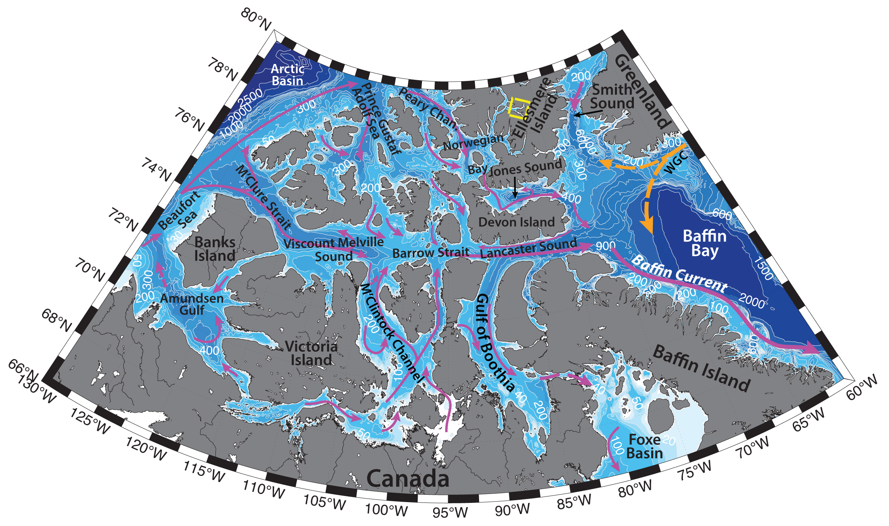

Schematic water circulation patterns and geographical place names in the Canadian Arctic Archipelago region. Adopted from Bailey (1957), Michel et al. (2006), Peterson et al. (2012). Dashed yellow line marks the studied region.
The Canadian Arctic Archipelago (CAA) is situated on a vast Canadian shelf and incorporates many narrow channels, dividing various basins and separated by sills (e.g. Michel et al., 2006). The Bay fjord is one of the Ellesmere Island western coast fjords, situated in the Eureka Sound, which, in turn, separates Axel Heiberg Island from the Ellesmere Island and connects the Norwegian Bay with the Arctic Ocean via Nansen Sound. The southern tributary of Bay Fjord is the Strathcona Fjord. Ellesmere Island is a large mountainous island in the Canadian Arctic Archipelago, covered with large ice fields and caps, e.g. Manson Icefield (6,200 km2 ), Sydkap (3,700 km2), Agassiz Ice Cap (21,500 km2), the Northern Ellesmere icefields (24,400 km2), Prince of Wales Icefield (20,700 km2), the latter being the closest to the fjord (Wolken et al., 2009).
Hydrography of the Bay Fjord region is determined by the complex topography, sea ice, freshwater runoff into the fjord (from the island ice fields as well), atmospheric forcing and inflow of the Arctic waters.
Canadian Arctic Archipelago is one of the dominant pathways of surface outflow from the Arctic Ocean to the Atlantic (the other one being through Fram Strait), due to steric differences, modulated by the atmospheric forcing (e.g. alongshore winds in the Beaufort Sea or northwestward winds east of Greenland; Peterson et al., 2012). The outflow of surface water through the CAA is fresher, compared to the outflow through Fram Strait. The majority of the CAA freshwater flux is in liquid form (>95 %), since much of the year the ice within the CAA is land-fast. Due to remote location, complicated topography, harsh winter conditions and narrow buoyancy driven boundary currents, the actual flow rates through the archipelago are difficult to obtain (see the figure for the schematic circulation; e.g. Michel et al., 2006).
The limited available data from the CAA show that the volume, freshwater and heat fluxes through the CAA channels (as well as temperature, salinity, velocity fields) vary greatly both seasonally and interannually. Fluxes are small in fall/winter and reach their maximum in late summer. Estimates range from 0.7 to 2.5 Sv of southward volume flux through the archipelago (Prinsenberg, Hamilton, 2005).
In the Canadian Arctic Archipelago sea ice is found all year round, and is generally land-fast due to the narrow width of the channels. Minimum ice cover is observed in September, freeze-up – in late December. Multi-year ice plugs (agglomerations of ice of different ages and thickness) are known to block the northern channels of the CAA, including Nansen Sound. Recent reductions of the sea ice cover across the Arctic Ocean and in the CAA can be reflected in the absence of the ice plugs as well (e.g. due to atmospheric forcing and warm ocean conditions), which in turn could allow enhanced penetration of Arctic Ocean multi-year ice into the CAA, e.g. into the Nansen and Eureka sounds (Atkinson et al., 2006).
Hydrography of the Ellesmere fjords and Nansen and Eureka sounds likely reflects hydrography of the nearby waters of the northern Canadian Arctic Archipelago coast of the Arctic Ocean. For example, Atlantic Water (0<T<2ºC, 34.2<S<34.5) was found to reside beneath 200 m depth in the Nansen Sound and surrounding fjords, identifiable by temperatures increasing with depth and by a change of slope in salinity profiles (e.g. Michel et al., 2006; Ford and Hattersley-Smith, 1965). While, to the best of our knowledge, there is no mentions in the literature of such observations for the Bay fjord, it is possible, that Atlantic Water can be advected into this fjord as well, since its depth is also greater 250 m. The top part of the water column in the region is occupied by surface Arctic Water, and is influenced by the freshwater and ice runoff from the coast as well (including, e.g., Prince of Wales Icefield). Surface layer can have wide range of temperatures (T can reach 5 – 6 ºC) and salinities (S > 34), amongst other factors caused by the melting and freezing of the extensive ice cover, but nevertheless this layer is generally rather cold and fresh (-1.8<T<0ºC, S from <31 up to 34.4; Muench, 1970; Bailey, 1957), with observed thickness from 20 to 75 m (observed down to 300 m in Baffin Bay). Winter cooling and ice freeze-up can cause salinization and densification of the water, and subsequent formation of the denser water mass, which sinks to the bottom. However, the water column of the Ellesmere fjords is usually characterized as being rather stable, with little to no vertical mixing and very little advection (Ford and Hattersley-Smith, 1965).